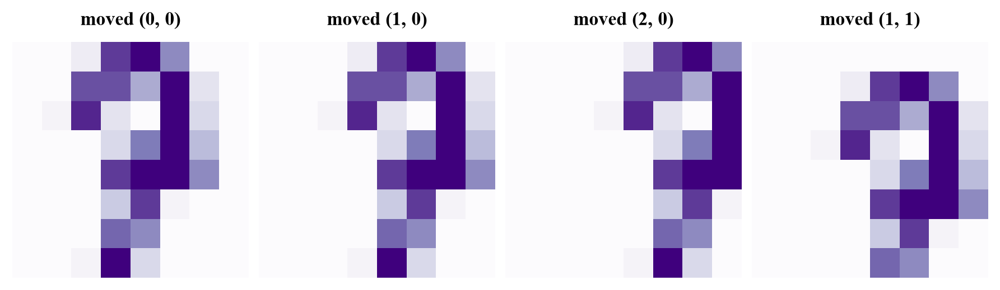
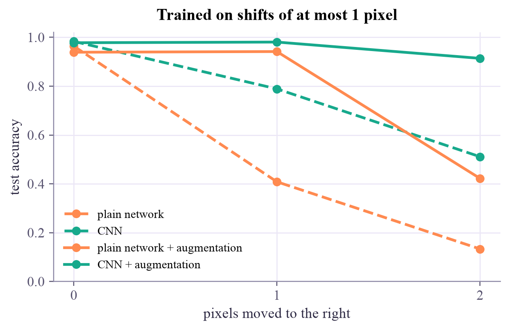

Machine Learning
 about 13 min
about 13 min ml-w9d3.ipynb
ml-w9d3.ipynb
Project: a CNN reads your digits
Week 5's digit reader against a CNN, on digits that aren't neatly centered. Then the trick every image model uses: data augmentation.
In this lesson you will
- Test a model honestly on a realistic change in the data: shifted digits
- Explain why convolutions and global pooling tolerate shifts better than a plain network
- Use data augmentation, and see what it can and can't fix
Warm-up
1 minOne pixel to the left

Week 5's network read 97% of the test digits. Now move every test digit one pixel to the right. Nothing about the digit changes; a person wouldn't even notice. The network's accuracy drops to about 40%. Today you'll see why, and fix it.
Big idea
3 minWhere versus what
A plain network gives every pixel its own weights. It learns that "ink at pixel (3, 5)" means something, so when the same stroke lands at pixel (3, 6), it is new to the network: it has never learned anything about it.
A CNN asks the same questions at every position, because its filters slide. If a stroke moves, its feature map moves with it: convolution is shift-equivariant. Today's CNN ends with a global max pool, which keeps only each channel's strongest response, wherever it is. So the final scores barely change when the digit moves: it is close to shift-invariant. The image edges spoil this a little (ink that moves out of the box is gone), but the CNN is still far more robust.
The second fix works for any model: data augmentation. During training, show each digit at a random small shift. The labels stay right, so it's more varied training data for free. Image models routinely augment with shifts, crops, flips, rotations and color changes; sound models with noise and speed changes.
Augmentation teaches what it shows: trained on shifts of at most one pixel, does a model also handle two? That's where the two ideas differ, and the project measures it.
A plain network learns where; a CNN learns what. Data augmentation teaches any model that some changes don't matter, but only the changes you show it.
Play
3 minPush the digit around
Both networks were trained with shifts of at most one pixel each way. Draw a digit (it's shrunk to the same way as in week 5), or load a test digit, then move it with the arrows.
Try this
Move a test digit two steps right, then two steps left. Which network keeps reading it? Then try moving up and down: why is that much harder for both? (Look at what happens to the top and bottom rows of the 8 × 8 picture.)
Code
2 minThe data and the contestants
The notebook for this lessonEvery code cell below, with what it printed, is in
ml-w9d3.ipynb. To change the code and run it yourself, open the notebook in Google Colab (free, in your browser) or download it for your own Jupyter.import copy
import time
import numpy as np
import matplotlib.pyplot as plt
import torch
import torch.nn as nn
from sklearn.datasets import load_digits
from sklearn.model_selection import train_test_split
torch.set_num_threads(1)
digits = load_digits()
images = digits.images / 16.0 # (1797, 8, 8), values 0 to 1
labels = digits.target
X_rest, X_test, y_rest, y_test = train_test_split(images, labels, test_size=0.2, random_state=0, stratify=labels)
X_train, X_val, y_train, y_val = train_test_split(X_rest, y_rest, test_size=0.25, random_state=0, stratify=y_rest)
def shift(imgs, dx, dy):
"""Move a stack of images dx pixels right and dy pixels down; what moves out is lost, blanks move in."""
out = np.roll(imgs, (dy, dx), axis=(1, 2))
if dy > 0: out[:, :dy, :] = 0
if dy < 0: out[:, dy:, :] = 0
if dx > 0: out[:, :, :dx] = 0
if dx < 0: out[:, :, dx:] = 0
return out
fig, axes = plt.subplots(1, 4, figsize=(8, 2.4), layout="constrained")
for ax, (dx, dy) in zip(axes, [(0, 0), (1, 0), (2, 0), (1, 1)]):
ax.imshow(shift(X_test[:1], dx, dy)[0], cmap="Purples", vmin=0, vmax=1)
ax.set_title(f"moved ({dx}, {dy})", fontsize=11)
ax.axis("off")
plt.show()What it printed in the notebook
def make_mlp():
torch.manual_seed(0)
return nn.Sequential(nn.Flatten(), nn.Linear(64, 64), nn.ReLU(), nn.Linear(64, 10))
def make_cnn():
torch.manual_seed(0)
return nn.Sequential(
nn.Conv2d(1, 16, 3, padding=1), nn.ReLU(),
nn.Conv2d(16, 32, 3, padding=1), nn.ReLU(), nn.MaxPool2d(2), # 8 x 8 -> 4 x 4
nn.Conv2d(32, 32, 3, padding=1), nn.ReLU(),
nn.AdaptiveMaxPool2d(1), nn.Flatten(), # the strongest response per channel
nn.Linear(32, 10))
count = lambda model: sum(p.numel() for p in model.parameters())
print(f"plain network: {count(make_mlp()):,} weights")
print(f"CNN: {count(make_cnn()):,} weights")What it printed in the notebook
plain network: 4,810 weights CNN: 14,378 weights
Project
4 minProject: train, shift, augment
- Train both networks on centered digits and test them on digits moved 0, 1 and 2 pixels.
- Train both again with augmentation (random shifts of up to one pixel) and test again.
- Your turn: move the test digits two pixels in each of the four directions. Is every direction equally hard?
T = lambda a: torch.tensor(a, dtype=torch.float32).unsqueeze(1) # (n, 1, 8, 8)
L = lambda a: torch.tensor(a, dtype=torch.long)
loss_fn = nn.CrossEntropyLoss()
def fit(model, augment=False, epochs=60):
opt = torch.optim.Adam(model.parameters(), lr=3e-3)
rng = np.random.default_rng(0)
best_loss, best_state = float("inf"), None
for epoch in range(epochs):
order = rng.permutation(len(X_train))
for i in range(0, len(order), 32):
idx = order[i:i + 32]
xb = X_train[idx]
if augment: # move each image by -1, 0 or +1 pixels each way
xb = np.stack([shift(xb[j:j + 1], *rng.integers(-1, 2, 2))[0] for j in range(len(xb))])
opt.zero_grad()
loss_fn(model(T(xb)), L(y_train[idx])).backward()
opt.step()
with torch.no_grad():
val_loss = loss_fn(model(T(X_val)), L(y_val)).item()
if val_loss < best_loss:
best_loss, best_state = val_loss, copy.deepcopy(model.state_dict())
model.load_state_dict(best_state)
return model
def accuracy(model, imgs, y):
with torch.no_grad():
return (model(T(imgs)).argmax(dim=1).numpy() == y).mean()
def shift_test(model):
"""Test accuracy with every test digit moved by 0, 1 and 2 pixels to the right."""
return [accuracy(model, shift(X_test, dx, 0), y_test) for dx in (0, 1, 2)]
t0 = time.perf_counter()
mlp, cnn = fit(make_mlp()), fit(make_cnn())
print(f"trained both in {time.perf_counter() - t0:.0f} s\n")
print(f"{'':14s} {'centered':>9s} {'moved 1':>8s} {'moved 2':>8s}")
for name, model in [("plain network", mlp), ("CNN", cnn)]:
print(f"{name:14s}" + "".join(f"{a:9.3f}" for a in shift_test(model)))What it printed in the notebook
trained both in 8 s
centered moved 1 moved 2
plain network 0.964 0.408 0.133
CNN 0.983 0.789 0.511On centered digits, both are excellent. One pixel to the side, the plain network collapses to 41% and the CNN keeps 79%, thanks to sliding filters and global pooling.
t0 = time.perf_counter()
mlp_aug, cnn_aug = fit(make_mlp(), augment=True), fit(make_cnn(), augment=True)
print(f"trained both in {time.perf_counter() - t0:.0f} s\n")
results = {"plain network": shift_test(mlp), "CNN": shift_test(cnn),
"plain network + augmentation": shift_test(mlp_aug), "CNN + augmentation": shift_test(cnn_aug)}
plt.figure(figsize=(6.4, 3.6))
for (name, acc), color, dash in zip(results.items(), ["#ff8a50", "#17a98c", "#ff8a50", "#17a98c"], ["--", "--", "-", "-"]):
plt.plot([0, 1, 2], acc, dash, marker="o", color=color, label=name)
plt.xticks([0, 1, 2])
plt.xlabel("pixels moved to the right")
plt.ylabel("test accuracy")
plt.ylim(0, 1.02)
plt.legend(fontsize=9.5)
plt.title("Trained on shifts of at most 1 pixel")
plt.show()
print(f"{'':30s} {'centered':>9s} {'moved 1':>8s} {'moved 2':>8s}")
for name, acc in results.items():
print(f"{name:30s}" + "".join(f"{a:9.3f}" for a in acc))What it printed in the notebook
trained both in 9 s

centered moved 1 moved 2 plain network 0.964 0.408 0.133 CNN 0.983 0.789 0.511 plain network + augmentation 0.939 0.942 0.422 CNN + augmentation 0.978 0.981 0.914
Augmentation rescues both at one pixel, the shift they were shown. At two pixels, a shift neither ever saw, the augmented CNN still reads 91% and the plain network only 42%: the CNN learned "what", the plain network only learned a few more "wheres". (The CNN has more weights, 14,378 against 4,810, but more weights alone can't make a plain network read pixels it never saw ink in.)
for dx, dy in [(2, 0), (-2, 0), (0, 2), (0, -2)]:
moved = None # TODO: shift(X_test, dx, dy)
print(f"moved ({dx:+d}, {dy:+d}): plain network {None} CNN {None}") # TODO: accuracy(...) of bothNeed a hint?
For each direction: moved = shift(X_test, dx, dy), then accuracy(mlp_aug, moved, y_test) and accuracy(cnn_aug, moved, y_test).
Show a solution
for dx, dy in [(2, 0), (-2, 0), (0, 2), (0, -2)]:
moved = shift(X_test, dx, dy)
print(f"moved ({dx:+d}, {dy:+d}): plain network {accuracy(mlp_aug, moved, y_test):.3f} CNN {accuracy(cnn_aug, moved, y_test):.3f}")
print("The digits fill the full height of the 8 x 8 box but not its width, so moving up or down")
print("pushes part of the digit out of the picture: no network can read ink that isn't there.")What it printed in the notebook
moved (+2, +0): plain network 0.422 CNN 0.914 moved (-2, +0): plain network 0.411 CNN 0.942 moved (+0, +2): plain network 0.242 CNN 0.547 moved (+0, -2): plain network 0.178 CNN 0.428 The digits fill the full height of the 8 x 8 box but not its width, so moving up or down pushes part of the digit out of the picture: no network can read ink that isn't there.
Check yourself
1 minQuick check
Question 1 of 3
Why does the plain network fail on digits moved by one pixel?
Question 2 of 3
What does data augmentation do?
Question 3 of 3
Augmented with shifts of up to one pixel, the CNN reads 91% of digits moved by two, the plain network 42%. What explains the difference?
Wrap-up
1 minToday in one sentence
Quantum link
Building what you know about the data into the model is called an inductive bias, and it's one of the most active ideas in quantum machine learning too: geometric QML designs circuits that respect the data's symmetries, as a CNN respects shifts, and such circuits need less data and are easier to train.
Go deeper (optional)
ISLP section 10.3.4 (data augmentation). Shorten and Khoshgoftaar, "A survey on image data augmentation for deep learning" (Journal of Big Data, 2019). For shifts that still trip CNNs up, and a fix: Zhang, "Making convolutional networks shift-invariant again" (ICML, 2019). Geometric QML: Larocca and coauthors, "Group-invariant quantum machine learning" (PRX Quantum, 2022).
Tomorrow: from images to sequences, with networks that have a memory.

That's the lesson!
Tap the button to save it. Short and steady wins.
Marked by mistake? Undo